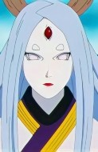
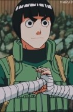

Selecione um personagem
- 
- 
Hinata
Ela tem a habilidade byakugan que permite ver através de objetos e incluindo chakra, ilusões, sentimentos e pensamentos alheios.
Ela tem a habilidade byakugan que permite ver através de objetos e incluindo chakra, ilusões, sentimentos e pensamentos alheios.